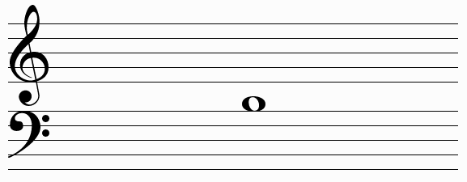

Практична теорія музики
Головна
Теорія
Практика
Контакти
Про проект
Розпізнавання нот
Введіть назву ноти:

Введіть назву ноти:
Введіть назву ноти:
Введіть назву ноти:
Введіть назву ноти:
Введіть назву ноти:
Введіть назву ноти:
Введіть назву ноти:
Перевірити
Малюнки та теоретичний матеріал:
musictheory.net